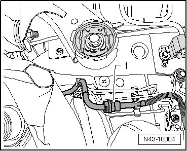
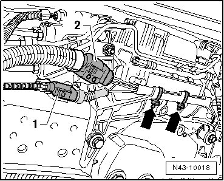
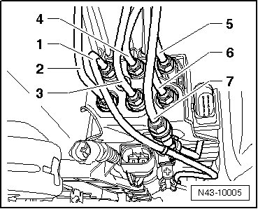
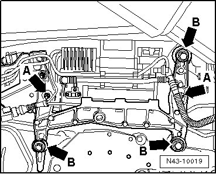
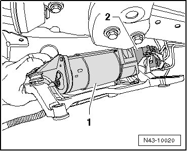
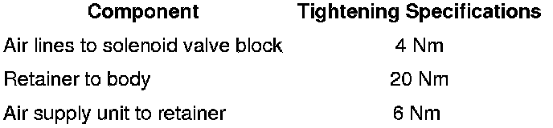

Air Supply Unit without Solenoid Valve Block
Air Supply Unit without Solenoid Valve Block
Special tools, testers and auxiliary items required
• Torque wrench (VAG 1331)
Removing
- Remove right underbody trim..
- Disconnect intake line - 1 - at clutch.

- Disconnect electrical connections - 1 - and - 2 - between air supply unit and body.

- Remove cable ties - arrows -.
- Remove air line - 1 - from solenoid valve block. Disconnect air line - 7 - at clutch.

CAUTION!
Air lines - 2 - and - 6 - must not be disconnected.
1. Black internal air line between solenoid valve block and compressor
2. Green, air line toward right front air spring shock absorber
3. Red, air line toward left rear air spring shock absorber
4. Violet, air line toward left front air spring shock absorber
5. Blue, air line toward pressure reservoirs
6. Yellow, air line toward right rear air spring shock absorber
7. Brown, air line toward connection for tire pressure
- Pull air lines out of bracket at underbody.
- Remove nuts - arrows A - for air supply unit.

- Remove bolts - arrows B - and secure air supply unit with bracket (second mechanic required).
- Lower air supply unit with bracket enough at front to remove air supply unit - 1 -.

CAUTION!
• Make absolutely sure that the solenoid valve block - 2 - is moved from underbody as little as possible.
• Furthermore, the air lines must not be kinked or stretched under any circumstance
Installing
Installation is performed in the reverse order of removal.
Tightening Specifications
